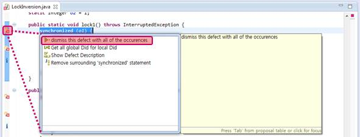
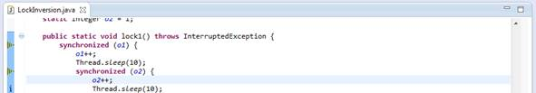
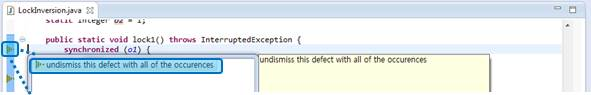

> Mark (False) Defect
Method of change defect status to Dismissed for your 3rd Party or False Positive defects.
1. Click  'Defect' icon that you want to Dismissed as below, then you can see as below menu.
'Defect' icon that you want to Dismissed as below, then you can see as below menu.

2. You can check that icons changed from 'Defect' to 'Dismissed'.

3. If you undismiss defects, click 'Dismissed' icon.
